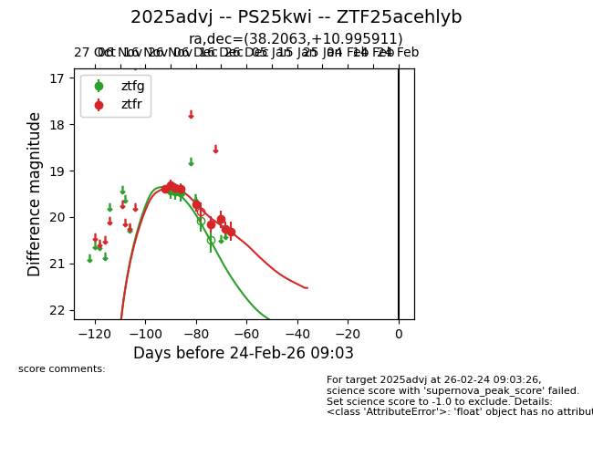
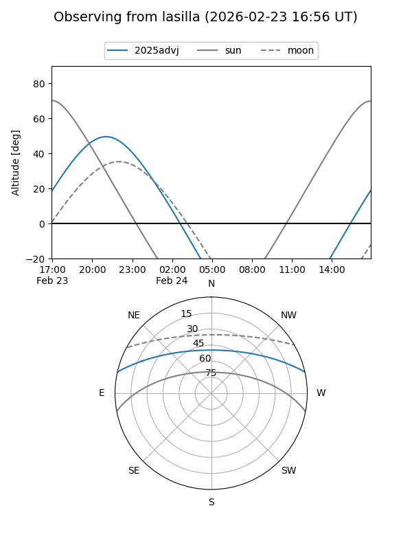
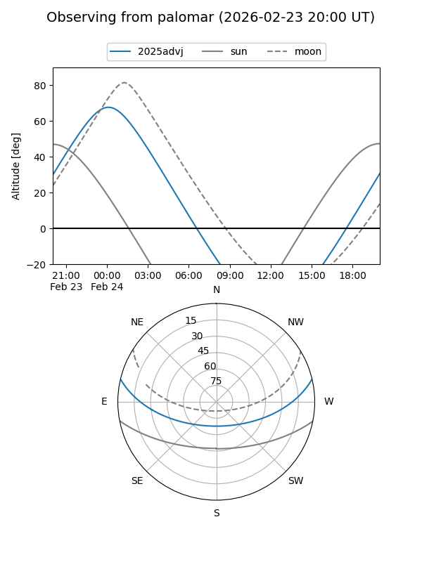
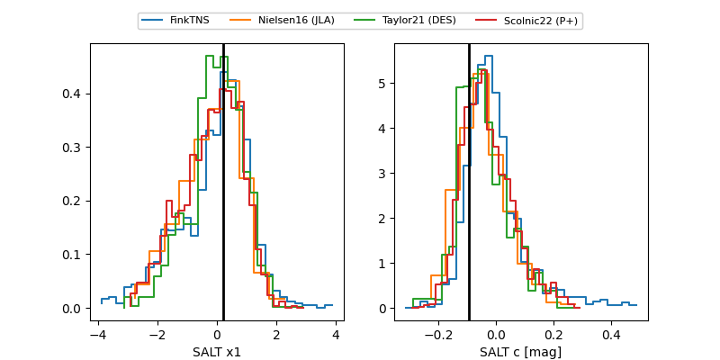

2025advj
Target 2025advj at 2026-01-09 12:49
Aliases and brokers:
FINK: link
Lasair: link
ALeRCE: link
TNS: link
YSE: link
alt names
ZTF25acehlyb (ztf,fink_ztf)
2025advj (tns,yse)
PS25kwi (panstarrs)
Coordinates:
equatorial (ra, dec) = 38.2063,+10.99591
equatorial (HMS+DMS) = 02:32:49.51,+10:59:45.28
galactic (l, b) = (159.1273,-44.63366)
Flags:
Photometry:
last ztfg=19.46, ztfr=20.31
3 ztfg, 9 ztfr detections
Lightcurve

Visibility


Additional plots
